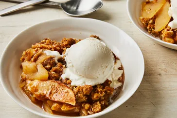

Apple Crisp Recipe
Return Home

Description
This apple crisp showcases apples at their best! The combination of warm, tender apples and the crunchy oat topping is one of my favorite desserts. Delicious with a scoop of vanilla ice cream.
Ingredients
- 6 cups thinly sliced, peeled tart apples
- 1 tablespoon lemon juice
- 3/4 cup packed brown sugar
- 1/2 cup all-purpose flour
- 1/2 cup rolled oats
- 1 teaspoon ground cinnamon
- 1/4 teaspoon ground nutmeg
- 1/4 teaspoon salt
- 1/3 cup butter, softened
Steps
- Preheat oven to 350°F (175°C).
- In a large bowl, toss the sliced apples with lemon juice. Transfer to a greased 9x13-inch baking dish.
- In another bowl, combine brown sugar, flour, oats, cinnamon, nutmeg, and salt. Cut in the butter until the mixture resembles coarse crumbs. Sprinkle evenly over the apples.
- Bake for 40-45 minutes or until the topping is golden brown and the apples are tender. Serve warm.